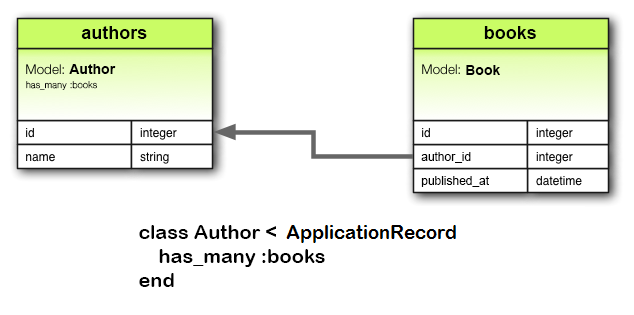

1 Por Que Associações?
Em Rails, uma associação é uma conexão entre dois models em Active Record. Por que precisamos de associações entre models? Porque eles tornam as operações comuns mais simples e fáceis de entender em seu código. Por exemplo, considere uma aplicação Rails simples que inclua um model para autores e um model para livros. Cada autor pode ter vários livros. Sem associações, as declarações do model seriam assim:
class Author < ApplicationRecord
end
class Book < ApplicationRecord
end
Agora, suponha que queremos adicionar um novo livro para um autor existente. Nós precisaríamos fazer algo assim:
@book = Book.create(published_at: Time.now, author_id: @author.id)
Ou considere excluir um autor, garantindo que todos os seus livros serão excluídos também:
@books = Book.where(author_id: @author.id)
@books.each do |book|
book.destroy
end
@author.destroy
Com as associações do Active Record, podemos otimizar essas - e outras - operações declarando ao Rails que há uma conexão entre os dois models. Aqui está o código revisado para configurar autores e livros:
class Author < ApplicationRecord
has_many :books, dependent: :destroy
end
class Book < ApplicationRecord
belongs_to :author
end
Com essa alteração, é mais fácil criar um novo livro para um autor específico:
@book = @author.books.create(published_at: Time.now)
Excluir um autor e todos os seus livros é muito mais fácil:
@author.destroy
Para saber mais sobre os diferentes tipos de associações, leia a próxima seção deste guia. Em seguida há algumas dicas e truques para trabalhar com associações e, na sequência, uma referência completa dos métodos e opções para associações no Rails.
2 Os Tipos de Associações
O Rails suporta seis tipos de associações:
As associações são implementadas usando chamadas macro-style, para que você possa adicionar declarativamente recursos aos seus models. Por exemplo, ao declarar que um model belongs_to (pertence a outro), você instrui o Rails a manter as informações de Primary Key-Foreign Key (Chave primária-Chave Estrangeira) entre instâncias dos dois models, e também obtém vários métodos úteis adicionados ao seu model.
No restante deste guia, você aprenderá como declarar e usar as várias formas de associação. Mas primeiro, uma rápida introdução para as situações em que cada tipo de associação é apropriada.
2.1 A Associação belongs_to
Uma associação belongs_to configura uma conexão com outro model, de modo que cada instância do model declarante "pertença a" uma instância do outro model. Por exemplo, se sua aplicação incluir autores e livros, e cada livro pertencer a apenas um autor, você declarará o model do livro da seguinte maneira:
class Book < ApplicationRecord
belongs_to :author
end

as associações belongs_to devem usar o termo no singular. Se você usou o plural no exemplo acima para a associação autor no model Livro e tentou criar a instância com Book.create(authors: @author), você seria informado de que existe uma "constante não inicializada Book::Authors". Isso ocorre porque o Rails deduz automaticamente o nome da classe a partir do nome da associação. Se o nome da associação estiver incorretamente no plural, a classe inferida também estará incorreta.
A migration correpondente parecerá assim:
class CreateBooks < ActiveRecord::Migration[6.0]
def change
create_table :authors do |t|
t.string :name
t.timestamps
end
create_table :books do |t|
t.belongs_to :author
t.datetime :published_at
t.timestamps
end
end
end
Quando usado sozinho, belongs_to produz uma conexão unidirecional um-para-um. Portanto, cada livro no exemplo acima "conhece" seu autor, mas os autores não sabem sobre seus livros.
Para configurar uma associação bidirecional - use belongs_to em combinação com has_one ou has_many no outro model.
belongs_to não garante consistência de referência, portanto, dependendo do caso de uso, você também pode precisar adicionar uma restrição de chave estrangeira a nível de banco de dados na coluna de referência, assim:
create_table :books do |t|
t.belongs_to :author, foreign_key: true
# ...
end
2.2 A associação has_one
Uma associação has_one indica que um outro model tem uma referência a este model. Esse model pode ser obtido por meio dessa associação.
Por exemplo, se cada fornecedor (supplier) da sua aplicação tiver apenas uma conta, você declararia o model de fornecedor desta forma:
class Supplier < ApplicationRecord
has_one :account
end
A principal diferença do belongs_to é que a coluna do link supplier_id está localizada na outra tabela:

A migration correpondente parecerá assim:
class CreateSuppliers < ActiveRecord::Migration[6.0]
def change
create_table :suppliers do |t|
t.string :name
t.timestamps
end
create_table :accounts do |t|
t.belongs_to :supplier
t.string :account_number
t.timestamps
end
end
end
Dependendo do caso de uso, também pode ser necessário criar um índice exclusivo e/ou uma restrição de foreign key na coluna do fornecedor para a tabela de contas. Nesse caso, a definição da coluna parecerá assim:
create_table :accounts do |t|
t.belongs_to :supplier, index: { unique: true }, foreign_key: true
# ...
end
Esta relação pode ser bidirecional quando usada em combinação com belongs_to no outro model.
2.3 A Associação has_many
Uma associação has_many é semelhante a has_one, mas indica uma conexão um-para-muitos com outro model. Você encontrará frequentemente essa associação no "outro lado" de uma associação belongs_to. Essa associação
indica que cada instância do model possui zero ou mais instâncias de outro model. Por exemplo, em uma aplicação que contém autores e livros, o model do autor pode ser declarado assim:
class Author < ApplicationRecord
has_many :books
end
O nome do outro model é pluralizado ao declarar uma associação has_many.

A migration correpondente parecerá assim:
class CreateAuthors < ActiveRecord::Migration[6.0]
def change
create_table :authors do |t|
t.string :name
t.timestamps
end
create_table :books do |t|
t.belongs_to :author
t.datetime :published_at
t.timestamps
end
end
end
Dependendo do caso de uso, geralmente é uma boa ideia criar um índice não único e, opcionalmente, uma restrição de chave estrangeira na coluna do autor para a tabela de livros:
create_table :books do |t|
t.belongs_to :author, index: true, foreign_key: true
# ...
end
2.4 A Associação has_many :through
Uma associação has_many :through é frequentemente usada para estabelecer uma conexão muitos-para-muitos com outro model. Essa associação indica que o model declarado pode ser correspondido com zero ou mais instâncias de outro model, prosseguindo através (through) de um terceiro model. Por exemplo, considere uma prática médica em que os pacientes marcam consultas com médicos. As declarações de associação relevantes podem ter a seguinte aparência:
class Physician < ApplicationRecord
has_many :appointments
has_many :patients, through: :appointments
end
class Appointment < ApplicationRecord
belongs_to :physician
belongs_to :patient
end
class Patient < ApplicationRecord
has_many :appointments
has_many :physicians, through: :appointments
end

A migration correspondente parecerá assim:
class CreateAppointments < ActiveRecord::Migration[6.0]
def change
create_table :physicians do |t|
t.string :name
t.timestamps
end
create_table :patients do |t|
t.string :name
t.timestamps
end
create_table :appointments do |t|
t.belongs_to :physician
t.belongs_to :patient
t.datetime :appointment_date
t.timestamps
end
end
end
O conjunto da junção dos models pode ser gerenciada através dos métodos de associação has_many.
Por exemplo, se você atribuir:
physician.patients = patients
Em seguida, novos models de junção são criados automaticamente para os objetos recém-associados. Se alguns que existiam anteriormente estão faltando agora, suas linhas de junção são excluídas automaticamente.
A exclusão automática de models de junção é direta, nenhum callback de destruição é acionado.
A associação has_many :through também é útil para configurar "atalhos" através de associações aninhadas has_many. Por exemplo, se um documento possui muitas seções e uma seção com muitos parágrafos, você pode obter uma coleção simples de todos os parágrafos do documento. Você pode configurar dessa maneira:
class Document < ApplicationRecord
has_many :sections
has_many :paragraphs, through: :sections
end
class Section < ApplicationRecord
belongs_to :document
has_many :paragraphs
end
class Paragraph < ApplicationRecord
belongs_to :section
end
Com through: :section especificado, o Rails agora entenderá:
@document.paragraphs
2.5 A Associação has_one :through
Uma Associação has_one :through estabelece uma conexão um-para-um com outro model. Essa associação indica
que o model declarante pode ser combinado com uma instância de outro model, prosseguindo através(through) de um terceiro model.
Por exemplo, se cada fornecedor tiver uma conta, e cada conta estiver associada a um histórico da conta, então o
model fornecedor poderia ficar assim:
class Supplier < ApplicationRecord
has_one :account
has_one :account_history, through: :account
end
class Account < ApplicationRecord
belongs_to :supplier
has_one :account_history
end
class AccountHistory < ApplicationRecord
belongs_to :account
end

A migration correpondente parecerá assim:
class CreateAccountHistories < ActiveRecord::Migration[6.0]
def change
create_table :suppliers do |t|
t.string :name
t.timestamps
end
create_table :accounts do |t|
t.belongs_to :supplier
t.string :account_number
t.timestamps
end
create_table :account_histories do |t|
t.belongs_to :account
t.integer :credit_rating
t.timestamps
end
end
end
2.6 A Associação has_and_belongs_to_many
Uma associação has_and_belongs_to_many cria uma conexão direta muitos-para-muitos com outro model, sem nenhum model intermediário.
Essa associação indica que cada instância do model declarado se refere a zero ou mais instâncias do outro model
Por exemplo, se sua aplicação incluir conjuntos e peças, com cada conjunto tendo muitas peças e cada peça aparecendo em muitos conjuntos, você poderá declarar os model desta maneira:
class Assembly < ApplicationRecord
has_and_belongs_to_many :parts
end
class Part < ApplicationRecord
has_and_belongs_to_many :assemblies
end
A migration correpondente parecerá assim:
class CreateAssembliesAndParts < ActiveRecord::Migration[6.0]
def change
create_table :assemblies do |t|
t.string :name
t.timestamps
end
create_table :parts do |t|
t.string :part_number
t.timestamps
end
create_table :assemblies_parts, id: false do |t|
t.belongs_to :assembly
t.belongs_to :part
end
end
end
2.7 Escolhendo entre belongs_to and has_one
Se você deseja configurar um relacionamento um-para-um entre dois models, será necessário adicionar belongs_to para um e has_one ao outro. Como você sabe qual é qual?
A distinção é onde você coloca a foreign key (ela aparece na tabela para a classe que declara a associação belongs_to), mas você deve pensar um pouco no significado real dos dados também. O relacionamento has_one diz que um de algo é seu - isto é, que algo aponta para você. Por exemplo, faz mais sentido dizer que um fornecedor possui uma conta do que uma conta possui um fornecedor. Isso sugere que os relacionamentos corretos são assim:
class Supplier < ApplicationRecord
has_one :account
end
class Account < ApplicationRecord
belongs_to :supplier
end
A migration correpondente parecerá assim:
class CreateSuppliers < ActiveRecord::Migration[6.0]
def change
create_table :suppliers do |t|
t.string :name
t.timestamps
end
create_table :accounts do |t|
t.bigint :supplier_id
t.string :account_number
t.timestamps
end
add_index :accounts, :supplier_id
end
end
O uso de t.bigint :supplier_id torna a nomeação da foreign key óbvia e explícita. Nas versões atuais do Rails, você pode abstrair esses detalhes de implementação usando t.references :supplier.
2.8 Escolhendo entre has_many :through e has_and_belongs_to_many
O Rails oferece duas maneiras diferentes de declarar um relacionamento muitos-para-muitos entre os models. A primeira maneira é usar has_and_belongs_to_many, o que permite fazer a associação diretamente:
class Assembly < ApplicationRecord
has_and_belongs_to_many :parts
end
class Part < ApplicationRecord
has_and_belongs_to_many :assemblies
end
A segunda maneira de declara um relacionamento muitos-para-muito é usar has_many :through. Isso faz uma associação de forma indireta, através de um model de junção:
class Assembly < ApplicationRecord
has_many :manifests
has_many :parts, through: :manifests
end
class Manifest < ApplicationRecord
belongs_to :assembly
belongs_to :part
end
class Part < ApplicationRecord
has_many :manifests
has_many :assemblies, through: :manifests
end
A regra mais simples é que você deve configurar um relacionamento has_many :through se precisar trabalhar com o models de relacionamento como uma entidade independente. Se você não precisar fazer nada com o model de relacionamento, pode ser mais simples configurar um relacionamento has_and_belongs_to_many (embora seja necessário lembrar de criar a tabela de junção no banco de dados).
Você deve usar has_many :through se precisar de validações, callbacks ou atributos extras no join model(modelo de junção).
2.9 Associações Polimórficas
Uma mudança um pouco mais avançada nas associações é a associação polimórfica. Com associações polimórficas, um model pode pertencer a mais de um outro model, em uma única associação. Por exemplo, você pode ter um model de foto que pertença a um model de funcionário ou a um model de produto. Veja como isso pode ser declarado:
class Picture < ApplicationRecord
belongs_to :imageable, polymorphic: true
end
class Employee < ApplicationRecord
has_many :pictures, as: :imageable
end
class Product < ApplicationRecord
has_many :pictures, as: :imageable
end
Você pode pensar em uma declaração polimórfica belongs_to como uma configuração de interface que qualquer outro model pode usar. Em uma instância do model Funcionário, você pode recuperar uma coleção de fotos: @employee.pictures.
Da mesma forma, você pode recuperar @product.pictures.
Se você tem uma instância do model Fotos, você pode chegar ao seu pai via @picture.imageable. Para fazer isso funcionar, você precisa declarar uma coluna de foreign key e uma coluna de tipo no model que declara a interface polimórfica:
class CreatePictures < ActiveRecord::Migration[6.0]
def change
create_table :pictures do |t|
t.string :name
t.bigint :imageable_id
t.string :imageable_type
t.timestamps
end
add_index :pictures, [:imageable_type, :imageable_id]
end
end
Esta migration pode ser simplificada usando a forma de t.references:
class CreatePictures < ActiveRecord::Migration[6.0]
def change
create_table :pictures do |t|
t.string :name
t.references :imageable, polymorphic: true
t.timestamps
end
end
end

2.10 Self Joins
Ao projetar um modelo de dados, algumas vezes você encontrará um model que deve ter uma relação consigo mesmo. Por exemplo, você pode querer armazenar todos os funcionários em um único modelo de banco de dados, mas conseguir rastrear relacionamentos como entre gerente e subordinados. Essa situação pode ser modelada com associações self-joining:
class Employee < ApplicationRecord
has_many :subordinates, class_name: "Employee",
foreign_key: "manager_id"
belongs_to :manager, class_name: "Employee", optional: true
end
Com esta configuração, você pode recuperar @employee.subordinates e @employee.manager.
Em suas migrations/schema, você adicionará uma coluna de referências ao próprio model.
class CreateEmployees < ActiveRecord::Migration[6.0]
def change
create_table :employees do |t|
t.references :manager, foreign_key: { to_table: :employees }
t.timestamps
end
end
end
3 Dicas, Truques e Avisos
Segue algumas coisas que você deve saber para utilizar as associações do Active Record nas suas aplicações Rails:
- Controlando o caching
- Evitando colisões de nome
- Atualizando o schema
- Controlando o escopo de associação
- Associações bidirecionais
3.1 Controlando o Caching
Todos os métodos de associação são construídos em torno de caching, o que mantém o resultado da query mais recente disponível para operações futuras. O cache é até compartilhado entre métodos. Por exemplo:
# retorna books do banco de dados
author.books.load
# usa a versão salva em cache da busca por books
author.books.size
# usa a versão salva em cache da busca por books
author.books.empty?
Mas e se você quiser recarregar o cache, porque pode haver alterações nos dados devido a outra parte da aplicação? Simplesmente chame reload na associação:
# retorna books do banco de dados
author.books
# usa a versão salva em cache da busca por books
author.books.size
# descarta a resposta da busca salva em cache por books
# e volta a olhar para o banco de dados
author.books.reload.empty?
3.2 Evitando Colisões de Nome
Não é possível usar simplesmente qualquer nome para suas associações. Considerando que ao criar uma associação adicionamos um método com o nome especificado ao model, é uma péssima ideia dar um nome para uma associação que já foi utilizado para um método de instância de ActiveRecord::Base. O método da associação sobrescreverá o método base e quebrará coisas. Por exemplo, attributes ou connection não são indicados como nomes para associações.
3.3 Atualizando o Schema
Associações são extremamente úteis, mas não são mágica. Você fica responsável por manter o schema do seu banco de dados de forma que corresponda às suas associações. Na prática, isto significa duas coisas, dependendo do tipo de associação que você criar. Para associações belongs_to você precisa criar chaves estrangeiras, e para associações has_and_belongs_to_many você precisa criar a tabela de junção (join table) apropriada.
3.3.1 Criando Chaves Estrangeiras para Associações belongs_to
Quando você declara uma associação belongs_to, você precisa criar as chaves estrangeiras apropriadas. Por exemplo, considere este model:
class Book < ApplicationRecord
belongs_to :author
end
Esta declaração precisa do apoio de uma coluna de chave estrangeira apropriada na tabela books. Pra uma tabela recém criada, a migração pode parecer com isto:
class CreateBooks < ActiveRecord::Migration[6.0]
def change
create_table :books do |t|
t.datetime :published_at
t.string :book_number
t.references :author
end
end
end
Enquanto que para uma tabela existente, pode parecer com isto:
class AddAuthorToBooks < ActiveRecord::Migration[6.0]
def change
add_reference :books, :author
end
end
Se você quiser impor integridade de referência no nível do banco de dados, acrescente a opção foreign_key: true à declaração da coluna 'reference' acima.
3.3.2 Criando Tabelas de Junção para Associações has_and_belongs_to_many
Se você criar uma associação has_and_belongs_to_many, você precisa criar a tabela de junção de forma explícita. A menos que o nome da tabela de junção seja especificado de forma explícita através da opção :join_table, o Active Record cria o nome utilizando a ordem léxica dos nomes de classe. Dessa forma, uma junção entre os models author e book resulta no nome de tabela de junção padrão "authors_books" porque "a" precede "b" na ordenação léxica.
A precedência entre nomes de model é calculada usando o operador <=> para String. Isto significa que se as strings têm comprimentos diferentes, e as strings são iguais quando comparados até o menor comprimento, então a string mais comprido recebe uma precedência léxica maior que o mais curto. Por exemplo, à primeira vista você pode esperar que as tabelas "paper_boxes" e "papers" resultem numa tabela de junção chamada "papers_paper_boxes" por causa do comprimento do nome "paper_boxes", mas em vez disso cria-se a tabela de junção chamada "paper_boxes_papers" (porque o underscore '_' recebe um peso lexicográfico menor que 's' em encodings comuns).
Independente do nome, você deve gerar manualmente a tabela de junção com a migração apropriada. Por exemplo, considere estas associações:
class Assembly < ApplicationRecord
has_and_belongs_to_many :parts
end
class Part < ApplicationRecord
has_and_belongs_to_many :assemblies
end
Elas precisam do apoio de uma migração para criar a tabela assemblies_parts. Esta tabela deve ser criada sem a chave primária:
class CreateAssembliesPartsJoinTable < ActiveRecord::Migration[6.0]
def change
create_table :assemblies_parts, id: false do |t|
t.bigint :assembly_id
t.bigint :part_id
end
add_index :assemblies_parts, :assembly_id
add_index :assemblies_parts, :part_id
end
end
Passamos id: false para create_table porque esta tabela não representa um model. Isto é necessário para a associação funcionar de maneira correta. Se você observar qualquer comportamento estranho numa associação has_and_belongs_to_many como IDs de model corrompidos, ou exceções envolvendo IDs em conflito, é provável que você tenha esquecido deste detalhe.
Você também pode utilizar o método create_join_table
class CreateAssembliesPartsJoinTable < ActiveRecord::Migration[6.0]
def change
create_join_table :assemblies, :parts do |t|
t.index :assembly_id
t.index :part_id
end
end
end
3.4 Controlando o Escopo de Associação
Por padrão, associações procuram por objetos apenas dentro do escopo do model atual. Isto é relevante quando você declara models do Active Record dentro de um módulo. Por exemplo:
module MyApplication
module Business
class Supplier < ApplicationRecord
has_one :account
end
class Account < ApplicationRecord
belongs_to :supplier
end
end
end
Isto funciona corretamente, porque tanto a classe Supplier quanto a classe Account são definidas dentro do mesmo escopo. Mas o próximo exemplo não funcionará, porque Supplier e Account são definidos em escopos diferentes:
module MyApplication
module Business
class Supplier < ApplicationRecord
has_one :account
end
end
module Billing
class Account < ApplicationRecord
belongs_to :supplier
end
end
end
Para associar um model a outro model em um namespace diferente, você deve especificar o nome completo da classe na declaração da sua associação:
module MyApplication
module Business
class Supplier < ApplicationRecord
has_one :account,
class_name: "MyApplication::Billing::Account"
end
end
module Billing
class Account < ApplicationRecord
belongs_to :supplier,
class_name: "MyApplication::Business::Supplier"
end
end
end
3.5 Associações Bidirecionais
É normal para associações funcionar em duas direções, necessitando de declarações em dois models diferentes:
class Author < ApplicationRecord
has_many :books
end
class Book < ApplicationRecord
belongs_to :author
end
O Active Record tentará identificar automaticamente que estes dois models compartilham uma associação bidirecional baseando-se no nome da associação. Desta forma, o Active Record carregará apenas uma cópia do objeto Author, tornando sua aplicação mais eficiente e evitando dados inconsistentes:
irb> a = Author.first
irb> b = a.books.first
irb> a.first_name == b.author.first_name
=> true
irb> a.first_name = 'David'
irb> a.first_name == b.author.first_name
=> true
O Active Record tem suporte a identificação automática para a maioria das associações com nomes padrão. Contudo, o Active Record não identificará automaticamente associações bidirecionais que contém um escopo ou qualquer uma das opções abaixo:
:through:foreign_key
Por exemplo, considere as declarações de models abaixo:
class Author < ApplicationRecord
has_many :books
end
class Book < ApplicationRecord
belongs_to :writer, class_name: 'Author', foreign_key: 'author_id'
end
O Active Record não reconhecerá mais a associação bidirecional:
irb> a = Author.first
irb> b = a.books.first
irb> a.first_name == b.writer.first_name
=> true
irb> a.first_name = 'David'
irb> a.first_name == b.writer.first_name
=> false
O Active Record fornece a opção :inverse_of para declarar associações bidirecionais de forma explícita:
class Author < ApplicationRecord
has_many :books, inverse_of: 'writer'
end
class Book < ApplicationRecord
belongs_to :writer, class_name: 'Author', foreign_key: 'author_id'
end
Ao incluir a opção :inverse_of na declaração da associação has_many, o Active Record agora reconhecerá a associação bidirecional:
irb> a = Author.first
irb> b = a.books.first
irb> a.first_name == b.writer.first_name
=> true
irb> a.first_name = 'David'
irb> a.first_name == b.writer.first_name
=> true
4 Referência Detalhada das Associações
As seções seguintes dão detalhes sobre cada tipo de associação, incluindo os métodos que elas adicionam e as opções que você pode usar quando declarar uma associação.
4.1 Referência da Associação belongs_to
Em termos de banco de dados, esta associação diz que a tabela deste modelo contém uma coluna que representa uma referência a outra tabela.
Isso pode ser usado para configurar relações um-para-um ou um-para-muitos, dependendo da configuração.
Se a tabela da outra classe contém a referência em uma relação um-para-um, então você deve usar has_one.
4.1.1 Métodos Adicionados por belongs_to
Quando você declara uma associação belongs_to, a classe declarada ganha automaticamente 6 métodos relacionados à associação:
associationassociation=(associate)build_association(attributes = {})create_association(attributes = {})create_association!(attributes = {})reload_association
Em todos esses métodos, association é substituída pelo symbol passado como primeiro argumento para belongs_to. Por exemplo, dada a declaração:
class Book < ApplicationRecord
belongs_to :author
end
Cada instância do model Book terá estes métodos:
author
author=
build_author
create_author
create_author!
reload_author
Quando inicializar uma associação has_one ou belongs_to nova você deve usar o prefixo build_ para montar a associação, ao invés do método association.build que seria usado para associações has_many ou has_and_belongs_to_many. Para criar uma associação nova, use o prefixo create_.
4.1.1.1 association
O método association retorna o objeto associado, se ele existir. Se nenhum objeto associado for encontrado, ele retorna nil.
@author = @book.author
Se o objeto associado já foi retornado pelo banco de dados para este objeto, a versão em cache será retornada. Para sobrescrever este comportamento (e forçar a leitura do banco de dados), chame #reload_association no objeto pai.
@author = @book.reload_author
4.1.1.2 association=(associate)
O método association= atribui um objeto associado a este objeto. Por trás das cenas, isto significa extrair a chave primária do objeto associado e atribuir à chave estrangeira do objeto o mesmo valor.
@book.author = @author
4.1.1.3 build_association(attributes = {})
O método build_association retorna um objeto novo do tipo associado. Este objeto será instanciado com os atributos passados, e a ligação através da chave estrangeira deste objeto será configurada, mas o objeto associado ainda não será salvo.
@author = @book.build_author(author_number: 123,
author_name: "John Doe")
4.1.1.4 create_association(attributes = {})
O método create_association retorna um objeto novo do tipo associado. Este objeto será instanciado com os atributos passados, e a ligação através da chave estrangeira deste objeto será configurada, e, uma vez que ele passe por todas as validações especificadas no model associado, o objeto associado será salvo.
@author = @book.create_author(author_number: 123,
author_name: "John Doe")
4.1.1.5 create_association!(attributes = {})
Faz a mesma coisa que o método create_association acima, mas retorna ActiveRecord::RecordInvalid se o registro for inválido.
4.1.2 Opções para belongs_to
Enquanto o Rails utiliza padrões inteligentes que funcionarão bem pra maior parte das situações, pode haver momentos onde você quer customizar o comportamento da referência à associação belongs_to. Estas customizações podem ser realizadas facilmente ao passar opções e blocos de escopo quando você cria a associação. Por exemplo, esta associação utiliza duas destas opções:
class Book < ApplicationRecord
belongs_to :author, touch: :books_updated_at,
counter_cache: true
end
A associação belongs_to tem suporte a estas opções:
:autosave:class_name:counter_cache:dependent:foreign_key:primary_key:inverse_of:polymorphic:touch:validate:optional
4.1.2.1 :autosave
Se você configurar a opção :autosave para true, o Rails salvará qualquer membro da associação carregada e destruirá membros que forem marcados para destruição quando você salvar o objeto pai. Ao configurar :autosave para false não é o mesmo que configurar a opção :autosave. Se a opção :autosave não estiver presente, então novos objetos associados serão salvos, mas objetos associados que forem atualizados não serão salvos.
4.1.2.2 :class_name
Se o nome do outro model não puder ser derivado a partir do nome da associação, você pode usar a opção :class_name para passar o nome do model. Por exemplo, se um book pertence a um author, mas o nome de fato do model contendo authors é Patron, esta configuração seria necessária:
class Book < ApplicationRecord
belongs_to :author, class_name: "Patron"
end
4.1.2.3 :counter_cache
A opção :counter_cache pode ser usada para tornar a busca pela quantidade de objetos que pertencem à associação mais eficiente. Considere estes models:
class Book < ApplicationRecord
belongs_to :author
end
class Author < ApplicationRecord
has_many :books
end
Com estas declarações, pedir o valor de @author.books.size requer fazer uma chamada para o banco de dados para realizar uma consulta COUNT(*). Para evitar esta chamada, você pode adicionar um cache de contagem ao model pertencente ao outro:
class Book < ApplicationRecord
belongs_to :author, counter_cache: true
end
class Author < ApplicationRecord
has_many :books
end
Com esta declaração, o Rails manterá o valor do cache atualizado, e aí retornará esse valor em resposta ao método size.
Embora a opção :counter_cache seja especificada no model que inclui a
declaração belongs_to, a coluna de fato deve ser adicionada ao model
associado (has_many). No caso acima, você precisaria adicionar uma coluna
com nome books_count ao model Author.
Você pode sobrescrever o nome padrão da coluna ao especificar um nome de coluna
customizado na declaração de counter_cache ao invés de especificar true. Por
exemplo, para usar count_of_books ao invés de books_count:
class Book < ApplicationRecord
belongs_to :author, counter_cache: :count_of_books
end
class Author < ApplicationRecord
has_many :books
end
Você só precisa especificar a opção :counter_cache no lado belongs_to
da associação.
Colunas de contagem de cache são adicionadas à lista de atributos de leitura do model contendo a associação através de attr_readonly.
4.1.2.4 :dependent
Se você configurar a opção :dependent para:
-
:destroy, quando o objeto for destruído, o métododestroyserá chamado nos seus objetos associados. -
:delete, quando o objeto for destruído, todos os objetos associados serão deletados diretamente do banco de dados sem chamar o métododestroy. -
:destroy_async: quando o objeto é destruído, um jobActiveRecord::DestroyAssociationAsyncJobé enfileirado, o que chamarádestroyem seus objetos associados. O Active Job deve ser configurado para que isso funcione.
Você não deve especificar esta opção numa associação belongs_to que estiver conectada com uma associação has_many com outra classe. Isto pode resultar em registros órfãos no seu banco de dados.
4.1.2.5 :foreign_key
Por convenção, o Rails presume que a coluna usada para armazenar a chave estrangeira no model é o nome da associação com o sufixo _id adicionado. A opção :foreign_key permite que você atribua o nome da chave estrangeira diretamente:
class Book < ApplicationRecord
belongs_to :author, class_name: "Patron",
foreign_key: "patron_id"
end
Em todo caso, o Rails não criará colunas de chave estrangeira para você. Você precisa defini-las de forma explícita como parte das suas migrações
4.1.2.6 :primary_key
Por convenção, o Rails presume que a coluna id é usada para armazenar a chave
primária de suas tabelas. A opção :primary_key permite especificar uma coluna
diferente para isto.
Por exemplo, dada uma tabela users com guid como chave primária. Se quisermos que uma tabela todos separada guarde a chave estrangeira user_id na coluna guid, então podemos usar primary_key para realizar isto desta forma:
class User < ApplicationRecord
self.primary_key = 'guid' # primary key is guid and not id
end
class Todo < ApplicationRecord
belongs_to :user, primary_key: 'guid'
end
Quando executamos @user.todos.create então o registro @todo terá seu valor
user_id como o valor guid de @user.
4.1.2.7 :inverse_of
A opção :inverse_of específica o nome da associação has_many ou has_one que é o inverso desta associação definida.
class Author < ApplicationRecord
has_many :books, inverse_of: :author
end
class Book < ApplicationRecord
belongs_to :author, inverse_of: :books
end
4.1.2.8 :polymorphic
Passar true para a opção :polymorphic indica que esta é uma associação polimórfica. Associações polimórficas foram discutidas com detalhes anteriormente neste guia.
4.1.2.9 :touch
Se você configurar a opção :touch como true, então o timestamp updated_at ou updated_on no objeto associado será configurado com a hora atual quando este objeto for salvo ou destruído:
class Book < ApplicationRecord
belongs_to :author, touch: true
end
class Author < ApplicationRecord
has_many :books
end
Neste caso, salvar ou destruir um book atualizará o timestamp no author associado. Você também pode especificar um timestamp particular para atualizar:
class Book < ApplicationRecord
belongs_to :author, touch: :books_updated_at
end
4.1.2.10 :validate
Se você configurar a opção :validate como true, então os objetos associados serão validados quando você salvar este objeto. Por padrão, este valor é false: objetos associados não serão validados quando este objeto for salvo.
4.1.2.11 :optional
Se você configurar a opção :optional como true, então a presença do objeto
associado não será validada. Por padrão, esta opção está configurada como
false.
4.1.3 Escopos para belongs_to
Podem haver momentos onde você pode querer customizar a consulta utilizada por belongs_to. Estas customizações podem ser feitas através de um bloco de escopo. Por exemplo:
class Book < ApplicationRecord
belongs_to :author, -> { where active: true }
end
Você pode utilizar qualquer um dos métodos padrão de consulta abaixo dentro do bloco de escopo. Os métodos seguintes são discutidos abaixo:
whereincludesreadonlyselect
4.1.3.1 where
O método where permite especificar as condições que o objeto associado deve atender.
class Book < ApplicationRecord
belongs_to :author, -> { where active: true }
end
4.1.3.2 includes
Você pode utilizar o método includes para especificar associações de segunda ordem que devem ser carregadas de forma adiantada quando esta associação for utilizada. Por exemplo, considere estes models:
class Chapter < ApplicationRecord
belongs_to :book
end
class Book < ApplicationRecord
belongs_to :author
has_many :chapters
end
class Author < ApplicationRecord
has_many :books
end
Se você consulta authors com frequência diretamente de chapters (@chapter.book.author), então você pode deixar o seu código relativamente mais eficiente ao incluir authors na associação de chapters para books:
class Chapter < ApplicationRecord
belongs_to :book, -> { includes :author }
end
class Book < ApplicationRecord
belongs_to :author
has_many :chapters
end
class Author < ApplicationRecord
has_many :books
end
Não há necessidade de usar includes para associações imediatas - isto é, se você tem Book belongs_to :author, então o author será carregado de forma adiantada automaticamente quando necessário.
4.1.3.3 readonly
Se você utilizar o método readonly, então o objeto associado só terá acesso de leitura quando retornado através da associação.
4.1.3.4 select
O método select permite sobrescrever a cláusula SQL SELECT que é usada para consultar dados sobre objeto associado. Por padrão, o Rails retorna todas as colunas.
If you use the select method on a belongs_to association, you should also set the :foreign_key option to guarantee the correct results.
4.1.4 Todos os Objetos Associados Existem?
Você pode ver se os objetos associados existem ao utilizar o método association.nil?:
if @book.author.nil?
@msg = "No author found for this book"
end
4.1.5 Quando os Objetos são Salvos?
Atribuir um objeto a uma associação belongs_to não salva o objeto automaticamente. Isto também não salva o objeto associado.
4.2 Referência da Associação has_one
A associação has_one cria uma relação um-para-um com outro model. Em termos do banco de dados, esta associação diz que a outra classe contém a chave estrangeira. Se esta classe contém a chave estrangeira, então você deve utilizar belongs_to.
4.2.1 Métodos Adicionados por has_one
Quando você declara uma associação has_one, a classe declarada ganha automaticamente 6 métodos relacionados à associação:
associationassociation=(associate)build_association(attributes = {})create_association(attributes = {})create_association!(attributes = {})reload_association
Em todos estes métodos, association será substituído pelo symbol passado como primeiro argumento para has_one. Por exemplo, dada a declaração:
class Supplier < ApplicationRecord
has_one :account
end
Cada instância do model Supplier terá estes métodos:
account
account=
build_account
create_account
create_account!
reload_account
Quando inicializar uma nova associação has_one ou belongs_to você deve usar o prefixo build_ para montar a associação, ao invés do método association.build que seria usado para associações has_many ou has_and_belongs_to_many. Para criar uma, use o prefixo create_.
4.2.1.1 association
O método association retorna o objeto associado, se ele existir. Se nenhum objeto associado for encontrado, ele retorna nil.
@account = @supplier.account
Se o objeto associado já foi retornado pelo banco de dados para este objeto, a versão em cache será retornada. Para sobrescrever este comportamento (e forçar a leitura do banco de dados), chame #reload_association no objeto pai.
@account = @supplier.reload_account
4.2.1.2 association=(associate)
O método association= atribui um objeto associado a este objeto. Por trás das cenas, isto significa extrair a chave primária do objeto associado e atribuir à chave estrangeira do objeto o mesmo valor.
@supplier.account = @account
4.2.1.3 build_association(attributes = {})
O método build_association retorna um objeto novo do tipo associado. Este objeto será instanciado com os atributos passados, e a ligação através da chave estrangeira deste objeto será configurada, mas o objeto associado ainda não será salvo.
@account = @supplier.build_account(terms: "Net 30")
4.2.1.4 create_association(attributes = {})
O método create_association retorna um objeto novo do tipo associado. Este objeto será instanciado com os atributos passados, e a ligação através da chave estrangeira deste objeto será configurada, e, uma vez que ele passe por todas as validações especificadas no model associado, o objeto associado será salvo.
@account = @supplier.create_account(terms: "Net 30")
4.2.1.5 create_association!(attributes = {})
Faz a mesma coisa que o método create_association acima, mas retorna ActiveRecord::RecordInvalid se o registro for inválido.
4.2.2 Opções para has_one
Embora o Rails utilize padrões inteligentes que funcionarão bem na maioria das situações, pode haver momentos onde você queira customizar o comportamento da referência da associação has_one. Tais customizações podem ser feitas facilmente ao passar opções quando você cria a associação. Por exemplo, esta associação usa duas destas opções:
class Supplier < ApplicationRecord
has_one :account, class_name: "Billing", dependent: :nullify
end
A associação has_one tem suporte para estas opções:
:as:autosave:class_name:dependent:foreign_key:inverse_of:primary_key:source:source_type:through:touch:validate
4.2.2.1 :as
Configurar a opção :as indica que esta é uma associação polimórfica. Associações polimórficas foram discutidas com detalhes anteriormente neste guia.
4.2.2.2 :autosave
Se você configurar a opção :autosave para true, o Rails salvará qualquer membro da associação carregada e destruirá membros que forem marcados para destruição quando você salvar o objeto pai. Ao configurar :autosave para false não é o mesmo que configurar a opção :autosave. Se a opção :autosave não estiver presente, então novos objetos associados serão salvos, mas objetos associados que forem atualizados não serão salvos.
4.2.2.3 :class_name
Se o nome do outro model não puder ser derivado a partir do nome da associação, você pode usar a opção :class_name para fornecer o nome do model. Por exemplo, se um supplier tem uma account, mas o nome de fato do model contendo accounts é Billing, esta configuração seria necessária:
class Supplier < ApplicationRecord
has_one :account, class_name: "Billing"
end
4.2.2.4 :dependent
Controla o que acontece com o objeto associado quando o dono dele é destruído:
-
:destroyfaz com que o objeto associado também seja destruído -
:deletefaz com que o objeto associado seja deletado diretamente do banco de dados (dessa forma os callbacks não serão executados) -
:destroy_async: quando o objeto é destruído, um jobActiveRecord::DestroyAssociationAsyncJobé enfileirado, que chamarádestroyem seus objetos associados. O Active Job deve ser configurado para que funcione. -
:nullifyfaz com que a chave estrangeira seja configurada paraNULL. Colunas polimórficas também recebemNULLem associações polimórficas. Callbacks não são executados. -
:restrict_with_exceptionfaz com que a exceçãoActiveRecord::DeleteRestrictionErrorseja retornada se houver um registro associado -
:restrict_with_erroradiciona um erro ao dono se já houver um objeto associado
É necessário não configurar ou deixar a opção :nullify para estas associações
que tem a restrição NOT NULL no banco de dados. Se você não configurar
dependent para estas associações você não poderá mudar o objeto associado
porque a chave estrangeira do objeto associado inicial será configurada para o
valor NULL que não é permitido.
4.2.2.5 :foreign_key
Por convenção, o Rails presume que a coluna usada para guardar a chave estrangeira no outro model tem o nome deste model com o sufixo _id adicionado. A opção :foreign_key permite que você configure o nome da chave estrangeira diretamente:
class Supplier < ApplicationRecord
has_one :account, foreign_key: "supp_id"
end
Em todo caso, o Rails não criará colunas de chave estrangeira para você. Você precisa defini-las de forma explícita como parte das suas migrações.
4.2.2.6 :inverse_of
A opção :inverse_of específica o nome da associação has_many ou has_one que é o inverso desta associação definida.
class Supplier < ApplicationRecord
has_one :account, inverse_of: :supplier
end
class Account < ApplicationRecord
belongs_to :supplier, inverse_of: :account
end
4.2.2.7 :primary_key
Por convenção, o Rails presume que a coluna id é usada para armazenar a chave primária de suas tabelas. A opção :primary_key permite especificar uma coluna diferente para isto.
4.2.2.8 :source
A opção :source especifica a associação fonte para uma associação has_one :through.
4.2.2.9 :source_type
A opção :source_type especifica o tipo da associação fonte para uma associação has_one :through que procede através de uma associação polimórfica.
class Author < ApplicationRecord
has_one :book
has_one :hardback, through: :book, source: :format, source_type: "Hardback"
has_one :dust_jacket, through: :hardback
end
class Book < ApplicationRecord
belongs_to :format, polymorphic: true
end
class Paperback < ApplicationRecord; end
class Hardback < ApplicationRecord
has_one :dust_jacket
end
class DustJacket < ApplicationRecord; end
4.2.2.10 :through
A opção :through específica um model de junção para realizar uma query através dele. Associações has_one :through foram discutidas com detalhes anteriormente neste guia.
4.2.2.11 :touch
Se você configurar a opção :touch como true, então o timestamp updated_at ou updated_on no objeto associado será configurado com a hora atual quando este objeto for salvo ou destruído:
class Supplier < ApplicationRecord
has_one :account, touch: true
end
class Account < ApplicationRecord
belongs_to :supplier
end
Neste caso, salvar ou destruir um supplier atualizará o timestamp na account associada. Você também pode especificar um timestamp particular para atualizar:
class Supplier < ApplicationRecord
has_one :account, touch: :suppliers_updated_at
end
4.2.2.12 :validate
Se você configurar a opção :validate como true, então os objetos associados serão validados quando você salvar este objeto. Por padrão, este valor é false: objetos associados não serão validados quando este objeto for salvo.
4.2.3 Escopos para has_one
Podem haver momentos onde você pode querer customizar a consulta utilizada por has_one. Estas customizações podem ser feitas através de um bloco de escopo. Por exemplo:
class Supplier < ApplicationRecord
has_one :account, -> { where active: true }
end
Você pode utilizar qualquer um dos métodos padrão de consulta abaixo dentro do bloco de escopo. Os métodos seguintes são discutidos abaixo:
whereincludesreadonlyselect
4.2.3.1 where
O método where permite especificar as condições que o objeto associado deve atender.
class Supplier < ApplicationRecord
has_one :account, -> { where "confirmed = 1" }
end
4.2.3.2 includes
Você pode utilizar o método includes para especificar associações de segunda ordem que devem ser carregadas de forma adiantada quando esta associação for utilizada. Por exemplo, considere estes models:
class Supplier < ApplicationRecord
has_one :account
end
class Account < ApplicationRecord
belongs_to :supplier
belongs_to :representative
end
class Representative < ApplicationRecord
has_many :accounts
end
Se você consulta representatives diretamente de suppliers com frequência (@supplier.account.representative), então você pode tornar seu código relativamente mais eficiente ao incluir representatives na associação de suppliers para accounts:
class Supplier < ApplicationRecord
has_one :account, -> { includes :representative }
end
class Account < ApplicationRecord
belongs_to :supplier
belongs_to :representative
end
class Representative < ApplicationRecord
has_many :accounts
end
4.2.3.3 readonly
Se você utilizar o método readonly, então o objeto associado só terá acesso de leitura quando retornado através da associação.
4.2.3.4 select
O método select permite sobrescrever a cláusula SQL SELECT que é usada para consultar dados sobre objeto associado. Por padrão, o Rails retorna todas as colunas.
4.2.4 Todos os Objetos Associados Existem?
Você pode ver se os objetos associados existem ao utilizar o método association.nil?:
if @supplier.account.nil?
@msg = "No account found for this supplier"
end
4.2.5 Quando os Objetos são Salvos?
Quando você atribui um objeto a uma associação has_one, este objeto será salvo automaticamente (para atualizar sua chave estrangeira). Além disso, qualquer objeto substituído também será salvo automaticamente, porque sua chave estrangeira também irá mudar.
Se qualquer uma destas operações de escrita falharem devido a erros de validação, então a atribuição retornará false e a atribuição em si será cancelada.
Se o objeto pai (o que declarar a associação has_one) não for salvo (isto é, new_record? retorna true) então os objetos filhos não serão salvos. Eles serão salvos automaticamente quando o objeto pai for salvo.
Se você quiser atribuir um objeto para uma associação has_one sem salvar o objeto, utilize o método build_association.
4.3 Referência da Associação has_many
A associação has_many cria uma relação um-para-muitos com outro model. Em termos do banco de dados, esta associação diz que a outra classe terá uma chave estrangeira que se refere a instâncias desta classe.
4.3.1 Métodos Adicionados por has_many
Quando você declara uma associação has_many, a classe declarada ganha automaticamente 17 métodos relacionados à associação:
collectioncollection<<(object, ...)collection.delete(object, ...)collection.destroy(object, ...)collection=(objects)collection_singular_idscollection_singular_ids=(ids)collection.clearcollection.empty?collection.sizecollection.find(...)collection.where(...)collection.exists?(...)collection.build(attributes = {})collection.create(attributes = {})collection.create!(attributes = {})collection.reload
Em todos estes métodos, collection será substituído pelo symbol passado como primeiro argumento para has_many, e collection_singular será substituído pela versão em singular daquele symbol. Por exemplo, dada a declaração:
class Author < ApplicationRecord
has_many :books
end
Cada instância do model Author terá estes métodos:
books
books<<(object, ...)
books.delete(object, ...)
books.destroy(object, ...)
books=(objects)
book_ids
book_ids=(ids)
books.clear
books.empty?
books.size
books.find(...)
books.where(...)
books.exists?(...)
books.build(attributes = {}, ...)
books.create(attributes = {})
books.create!(attributes = {})
books.reload
4.3.1.1 collection
O método collection retorna uma Relation de todos os objetos associados. Se não há objetos associados, ele retorna uma Relation vazia.
@books = @author.books
4.3.1.2 collection<<(object, ...)
O método collection<< acrescenta um ou mais objetos à coleção configurando a chave estrangeira deles como a chave primária do model pai.
@author.books << @book1
4.3.1.3 collection.delete(object, ...)
O método collection.delete remove um ou mais objetos da coleção ao configurar a chave estrangeira deles como NULL.
@author.books.delete(@book1)
Além disso, os objetos serão destruídos se estiverem associados com dependent: :destroy, e deletados se estiverem associados com dependent: :delete_all.
4.3.1.4 collection.destroy(object, ...)
O método collection.destroy remove um ou mais objetos da coleção executando destroy em cada objeto.
@author.books.destroy(@book1)
Os objetos sempre serão removidos do banco de dados, ignorando a opção :dependent.
4.3.1.5 collection=(objects)
O método collection= faz com que a coleção contenha apenas os objetos fornecidos, ao adicionar e deletar da forma que for mais apropriada. As mudanças são persistidas no banco de dados.
4.3.1.6 collection_singular_ids
O método collection_singular_ids retorna um array de ids dos objetos na coleção.
@book_ids = @author.book_ids
4.3.1.7 collection_singular_ids=(ids)
O método collection= faz com que a coleção contenha apenas os objetos identificados pelo valor das chaves primárias fornecidas, adicionando e deletando da forma que for mais apropriada. As mudanças são persistidas no banco de dados.
4.3.1.8 collection.clear
O método collection.clear remove todos os objetos da coleção de acordo com a estratégia especificada pela opção dependent. Se nenhuma opção for especificada, ele segue a estratégia padrão. A estratégia padrão para associações has_many :through é delete_all, e para associações has_many é configurar as chaves estrangeiras como NULL.
@author.books.clear
Objetos serão deletados se eles forem associados com dependent: :destroy ou dependent: :destroy_async,
assim como dependent: :delete_all.
4.3.1.9 collection.empty?
O método collection.empty? retorna true se a coleção não contiver nenhum objeto associado.
<% if @author.books.empty? %>
No Books Found
<% end %>
4.3.1.10 collection.size
O método collection.size retorna o número de objetos na coleção.
@book_count = @author.books.size
4.3.1.11 collection.find(...)
O método collection.find procura objetos dentro da tabela da coleção.
@available_book = @author.books.find(1)
4.3.1.12 collection.where(...)
O método collection.where procura objetos dentro da coleção com base nas condições fornecidas mas os objetos serão carregados apenas quando necessário (lazy loading) significando que o banco de dados é consultado apenas quando os objetos são acessados.
@available_books = @author.books.where(available: true) # No query yet
@available_book = @available_books.first # Now the database will be queried
4.3.1.13 collection.exists?(...)
O método collection.exists? confere se um objeto que atende às condições fornecidas
existe na tabela da coleção.
4.3.1.14 collection.build(attributes = {})
O método collection.build retorna apenas um objeto ou um array de objetos. Os objetos serão instanciados com base nos atributos passados para o método e será criada uma ligação através de chaves estrangeiras, mas os objetos associados não serão salvos ainda.
@book = @author.books.build(published_at: Time.now,
book_number: "A12345")
@books = @author.books.build([
{ published_at: Time.now, book_number: "A12346" },
{ published_at: Time.now, book_number: "A12347" }
])
4.3.1.15 collection.create(attributes = {})
O método collection.create retorna um objeto ou um array de novos objetos do tipo associado. Os objetos serão instanciados com base nos atributos que foram passados para o método, e uma ligação será criada através de uma chave estrangeira, e, uma vez que estes objetos passem por todas as validações especificadas no model associado, o objeto associado será salvo.
@book = @author.books.create(published_at: Time.now,
book_number: "A12345")
@books = @author.books.create([
{ published_at: Time.now, book_number: "A12346" },
{ published_at: Time.now, book_number: "A12347" }
])
4.3.1.16 collection.create!(attributes = {})
Faz o mesmo que collection.create acima, mas retorna ActiveRecord::RecordInvalid se o dado for inválido.
4.3.1.17 collection.reload
O método collection.reload retorna uma Relation de todos os objetos associados, forçando uma leitura do banco de dados. Se não houver objetos associados, ele retorna uma Relation vazia.
@books = @author.books.reload
4.3.2 Opções para has_many
Embora o Rails utilize padrões inteligentes que funcionarão bem na maioria das situações, pode haver momentos onde você queira customizar o comportamento da referência da associação has_many. Tais customizações podem ser feitas facilmente ao passar opções quando você cria a associação. Por exemplo, esta associação usa duas destas opções:
class Author < ApplicationRecord
has_many :books, dependent: :delete_all, validate: false
end
A associação has_many tem suporte para estas opções:
:as:autosave:class_name:counter_cache:dependent:foreign_key:inverse_of:primary_key:source:source_type:through:validate
4.3.2.1 :as
Configurar a opção :as indica que esta é uma associação polimórfica, como discutido anteriomente neste guia.
4.3.2.2 :autosave
Se você configurar a opção :autosave para true, o Rails salvará qualquer membro da associação carregada e destruirá membros que forem marcados para destruição quando você salvar o objeto pai. Ao configurar :autosave para false não é o mesmo que configurar a opção :autosave. Se a opção :autosave não estiver presente, então novos objetos associados serão salvos, mas objetos associados que forem atualizados não serão salvos.
4.3.2.3 :class_name
Se o nome do outro model não puder ser derivado a partir do nome da associação, você pode usar a opção :class_name para fornecer o nome do model. Por exemplo, se um author tem muitos books, mas o nome de fato do model contendo books é Transaction, esta configuração seria necessária:
class Author < ApplicationRecord
has_many :books, class_name: "Transaction"
end
4.3.2.4 :counter_cache
Esta opção pode ser utilizada para configurar um :counter_cache personalizado. Você só precisa desta opção quando você personalizar o nome do seu :counter_cache na associação belongs_to.
4.3.2.5 :dependent
Controla o que acontece com os objetos associados quando o dono deles é destruído:
-
:destroyfaz com que todos os objetos associados também sejam destruídos -
:delete_allfaz com que todos os objetos associados sejam deletados diretamente do banco de dados (dessa forma os callbacks não serão executados) -
:destroy_async: quando o objeto é destruído, um jobActiveRecord::DestroyAssociationAsyncJobé enfileirado, que chamarádestroyem seus objetos associados. O Active Job deve ser configurado para que funcione. -
:nullifyfaz com que a chave estrangeira seja configurada paraNULL. Colunas polimórficas também recebemNULLem associações polimórficas. Callbacks não são executados. -
:restrict_with_exceptionfaz com a exceçãoActiveRecord::DeleteRestrictionErrorseja retornada se houverem objetos associados -
:restrict_with_erroradiciona um erro ao objeto dono se houverem objetos associados
As opções :destroy e :delete_all também afetam a semântica dos métodos collection.delete e collection= fazendo com que eles destruam objetos associados ao removê-los da coleção.
4.3.2.6 :foreign_key
Por convenção, o Rails presume que a coluna usada para guardar a chave estrangeira no outro model tem o nome deste model com o sufixo _id adicionado. A opção :foreign_key permite que você configure o nome da chave estrangeira diretamente:
class Author < ApplicationRecord
has_many :books, foreign_key: "cust_id"
end
Em todo caso, o Rails não criará colunas de chave estrangeira para você. Você precisa defini-las de forma explícita como parte das suas migrações.
4.3.2.7 :inverse_of
A opção :inverse_of específica o nome da associação has_many ou has_one que é o inverso desta associação definida.
class Author < ApplicationRecord
has_many :books, inverse_of: :author
end
class Book < ApplicationRecord
belongs_to :author, inverse_of: :books
end
4.3.2.8 :primary_key
Por convenção, o Rails presume que a coluna id é usada para armazenar a chave primária de suas tabelas. A opção :primary_key permite especificar uma coluna diferente para isto.
Digamos que a tabela users tenha id como chave primária mas também tem uma
coluna guid. O requerimento é que a tabela todos deve guardar o valor da
coluna guid como chave estrangeria e não o valor de id. Podemos fazer isto
desta forma:
class User < ApplicationRecord
has_many :todos, primary_key: :guid
end
Agora ao executar @todo = @user.todos.create o valor de user_id no
registro @todo será o valor guid de @user.
4.3.2.9 :source
A opção :source especifica a associação fonte para uma associação has_many :through. Você só precisa utilizar esta opção se não for possível inferir o nome da associação fonte automaticamente.
4.3.2.10 :source_type
A opção :source_type especifica o tipo da associação fonte para uma associação has_many :through que procede através de uma associação polimórfica.
class Author < ApplicationRecord
has_many :books
has_many :paperbacks, through: :books, source: :format, source_type: "Paperback"
end
class Book < ApplicationRecord
belongs_to :format, polymorphic: true
end
class Hardback < ApplicationRecord; end
class Paperback < ApplicationRecord; end
4.3.2.11 :through
A opção :through específica um model de junção para realizar uma query através dele. Associações has_many :through fornecem uma maneira de implementar relações muitos-para-muitos, como discutido anteriormente neste guia.
4.3.2.12 :validate
Se você configurar a opção :validate como false, então os objetos associados não serão validados quando você salvar este objeto. Por padrão, este valor é true: objetos associados serão validados quando este objeto for salvo.
4.3.3 Escopos para has_many
Podem haver momentos onde você pode querer customizar a consulta utilizada por has_many. Estas customizações podem ser feitas através de um bloco de escopo. Por exemplo:
class Author < ApplicationRecord
has_many :books, -> { where processed: true }
end
Você pode utilizar qualquer um dos métodos padrão de consulta abaixo dentro do bloco de escopo. Os métodos seguintes são discutidos abaixo:
whereextendinggroupincludeslimitoffsetorderreadonlyselectdistinct
4.3.3.1 where
O método where permite especificar as condições que o objeto associado deve atender.
class Author < ApplicationRecord
has_many :confirmed_books, -> { where "confirmed = 1" },
class_name: "Book"
end
Você também pode especificar condições através de um hash:
class Author < ApplicationRecord
has_many :confirmed_books, -> { where confirmed: true },
class_name: "Book"
end
Se você utilizar uma opção no estilo hash, então a criação de dados através desta associação terá o escopo limitado automaticamente utilizando o hash. Neste caso, utilizar @author.confirmed_books.create ou @author.confirmed_books.build criará books onde a coluna confirmed terá o valor true.
4.3.3.2 extending
O método extending específica um módulo com nome para estender a delegação da associação. Extensões de associações são discutidas com detalhes mais pra frente neste guia.
4.3.3.3 group
O método group fornece um nome de atributo para agrupar o resultado da consulta ao banco de dados, utilizando a cláusula GROUP BY na busca SQL.
class Author < ApplicationRecord
has_many :chapters, -> { group 'books.id' },
through: :books
end
4.3.3.4 includes
Você pode utilizar o método includes para especificar associações de segunda ordem que devem ser carregadas de forma adiantada quando esta associação for utilizada. Por exemplo, considere estes models:
class Author < ApplicationRecord
has_many :books
end
class Book < ApplicationRecord
belongs_to :author
has_many :chapters
end
class Chapter < ApplicationRecord
belongs_to :book
end
Se você busca chapters com frequência de authors (@author.books.chapters), então você pode deixar o seu código ligeiramente mais eficiente ao incluir chapters na associação de authors para books:
class Author < ApplicationRecord
has_many :books, -> { includes :chapters }
end
class Book < ApplicationRecord
belongs_to :author
has_many :chapters
end
class Chapter < ApplicationRecord
belongs_to :book
end
4.3.3.5 limit
O método limit permite restringir o número total de objetos que serão retornados através de uma associação.
class Author < ApplicationRecord
has_many :recent_books,
-> { order('published_at desc').limit(100) },
class_name: "Book"
end
4.3.3.6 offset
O método permite especificar o deslocamento inicial ao buscar objetos do banco de dados através de uma associação. . Por exemplo, -> { offset(11) } pulará os primeiros 11 registros no banco de dados.
4.3.3.7 order
O método order determina a ordem pela qual objetos associados serão retornados (na sintaxe utilizada pela cláusula SQL ORDER BY).
class Author < ApplicationRecord
has_many :books, -> { order "date_confirmed DESC" }
end
4.3.3.8 readonly
Se você utilizar o método readonly, então os objetos associados só terão acesso de leitura quando retornados através da associação.
4.3.3.9 select
O método select permite sobrescrever a cláusula SQL SELECT que é utilizada para retornar dados sobre os objetos associados. Por padrão, o Rails retorna todas as colunas.
Se você especificar seu próprio select, certifique-se de incluir as colunas de chave primária e chave estrangeira do model associado. Se você não fizer isto, o Rails retornará um erro.
4.3.3.10 distinct
Utilize o método distinct para manter a coleção livre de objetos duplicados. Isto é
mais útil junto com a opção :through.
class Person < ApplicationRecord
has_many :readings
has_many :articles, through: :readings
end
irb> person = Person.create(name: 'John')
irb> article = Article.create(name: 'a1')
irb> person.articles << article
irb> person.articles << article
irb> person.articles.to_a
=> [#<Article id: 5, name: "a1">, #<Article id: 5, name: "a1">]
irb> Reading.all.to_a
=> [#<Reading id: 12, person_id: 5, article_id: 5>, #<Reading id: 13, person_id: 5, article_id: 5>]
No caso acima há dois readings e person.articles retorna os dois apesar
destes registros apontarem para o mesmo article.
Agora vamos especificar distinct:
class Person
has_many :readings
has_many :articles, -> { distinct }, through: :readings
end
irb> person = Person.create(name: 'Honda')
irb> article = Article.create(name: 'a1')
irb> person.articles << article
irb> person.articles << article
irb> person.articles.to_a
=> [#<Article id: 7, name: "a1">]
irb> Reading.all.to_a
=> [#<Reading id: 16, person_id: 7, article_id: 7>, #<Reading id: 17, person_id: 7, article_id: 7>]
No caso acima ainda há dois readings. Contudo, person.articles mostra apenas
um article porque a coleção carrega apenas registros únicos.
Se você quiser ter certeza que, ao inserir dados novos no banco, todos os
registros na associação persistida sejam distintos (de forma que você também
possa ter certeza que quando inspecionar a associação, não achará dados
duplicados), você deve colocar um índice único na própria tabela. Por exemplo,
se você tem uma tabela chamada readings e você quer ter certeza que os
articles sejam adicionados por uma person apenas uma vez, você pode colocar
o seguinte em uma migração:
add_index :readings, [:person_id, :article_id], unique: true
Uma vez que você tenha este índice único, tentar incluir um article a uma
person duas vezes retornará um erro ActiveRecord::RecordNotUnique:
irb> person = Person.create(name: 'Honda')
irb> article = Article.create(name: 'a1')
irb> person.articles << article
irb> person.articles << article
ActiveRecord::RecordNotUnique
Note que conferir por unicidade utilizando algo como include? está sujeito a
race conditions (Exemplo:
https://pt.wikipedia.org/wiki/Condi%C3%A7%C3%A3o_de_corrida). Não tente utilizar
include? para impor que objetos sejam distintos em um associação. Por exemplo,
utilizando o exemplo de article acima, o código seguinte teria uma race
condition porque múltiplos usuários podem tentar isto ao mesmo tempo:
person.articles << article unless person.articles.include?(article)
4.3.4 Quando os Objetos são Salvos?
Quando você atribui um objeto a uma associação has_many, este objeto será salvo automaticamente (para atualizar sua chave estrangeira). Se você atribuir vários objetos em uma declaração, então todos serão salvos.
Se qualquer uma destas operações de escrita falharem devido a erros de validação, então a atribuição retornará false e a atribuição em si será cancelada.
Se o objeto pai (o que declarar a associação has_many) não for salvo (isto é, new_record? retorna true) então os objetos filhos não serão salvos quando forem adicionados à coleção. Todos os membros da associação que não forem salvos anteriormente serão salvos automaticamente quando o objeto pai for salvo.
Se você quiser atribuir um objeto para uma associação has_many sem salvar o objeto, utilize o método collection.build.
4.4 Referência da Associação has_and_belongs_to_many
A associação has_and_belongs_to_many cria uma relação muitos-para-muitos com outro model. Em termos do banco de dados, isto associa duas classes através de uma tabela de junção intermediária que inclui chaves estrangeiras fazendo referência a cada classe.
4.4.1 Métodos Adicionados por has_and_belongs_to_many
Quando você declara uma associação has_and_belongs_to_many, a classe declarada ganha automaticamente vários métodos relacionados à associação:
collectioncollection<<(object, ...)collection.delete(object, ...)collection.destroy(object, ...)collection=(objects)collection_singular_idscollection_singular_ids=(ids)collection.clearcollection.empty?collection.sizecollection.find(...)collection.where(...)collection.exists?(...)collection.build(attributes = {})collection.create(attributes = {})collection.create!(attributes = {})collection.reload
Em todos estes métodos, collection será substituído pelo symbol passado como primeiro argumento para has_and_belongs_to_many, e collection_singular será substituído com a versão singular daquele symbol. Por exemplo, dada a declaração:
class Part < ApplicationRecord
has_and_belongs_to_many :assemblies
end
Cada instância do model Part terá estes métodos:
assemblies
assemblies<<(object, ...)
assemblies.delete(object, ...)
assemblies.destroy(object, ...)
assemblies=(objects)
assembly_ids
assembly_ids=(ids)
assemblies.clear
assemblies.empty?
assemblies.size
assemblies.find(...)
assemblies.where(...)
assemblies.exists?(...)
assemblies.build(attributes = {}, ...)
assemblies.create(attributes = {})
assemblies.create!(attributes = {})
assemblies.reload
4.4.1.1 Métodos Adicionais de Coluna
Se a tabela de junção para uma associação has_and_belongs_to_many tem colunas adicionais além das duas chaves estrangeiras, estas colunas serão adicionadas como atributos dos registros retornados através da associação. Registros retornados com atributos adicionais apenas poderão ter acesso de leitura, porque o Rails não pode salvar mudanças destes atributos.
O uso de atributos extras na tabela de junção em uma associação has_and_belongs_to_many está deprecado. Se você necessitar deste tipo de comportamento complexo na tabela que liga dois models em uma relação muitos-para-muitos, você deve utilizar uma associação has_many :through ao invés de uma associação has_and_belongs_to_many.
4.4.1.2 collection
O método collection retorna uma Relation de todos os objetos associados. Se não há objetos associados, ele retorna uma Relation vazia.
@assemblies = @part.assemblies
4.4.1.3 collection<<(object, ...)
O método collection<< acrescenta um ou mais objetos à coleção criando dados na tabela de junção.
@part.assemblies << @assembly1
Este método pode ser chamado como collection.concat e collection.push.
4.4.1.4 collection.delete(object, ...)
O método collection.delete remove um ou mais objetos da coleção deletando dados da tabela de junção. Isto não destrói os objetos.
@part.assemblies.delete(@assembly1)
4.4.1.5 collection.destroy(object, ...)
O método collection.destroy remove um ou mais objetos da coleção deletando dados da tabela de junção. Isto não destrói os objetos.
@part.assemblies.destroy(@assembly1)
4.4.1.6 collection=(objects)
O método collection= faz com que a coleção contenha apenas os objetos fornecidos, ao adicionar e deletar da forma que for mais apropriada. As mudanças são persistidas no banco de dados.
4.4.1.7 collection_singular_ids
O método collection_singular_ids retorna um array de ids dos objetos na coleção.
@assembly_ids = @part.assembly_ids
4.4.1.8 collection_singular_ids=(ids)
O método collection= faz com que a coleção contenha apenas os objetos identificados pelo valor das chaves primárias fornecidas, adicionando e deletando da forma que for mais apropriada. As mudanças são persistidas no banco de dados.
4.4.1.9 collection.clear
O método collection.clear remove todos os objetos da coleção deletando todas as linhas da tabela de junção. Isto não destrói os objetos associados.
4.4.1.10 collection.empty?
O método collection.empty? retorna true se a coleção não contiver nenhum objeto associado.
<% if @part.assemblies.empty? %>
This part is not used in any assemblies
<% end %>
4.4.1.11 collection.size
O método collection.size retorna o número de objetos na coleção.
@assembly_count = @part.assemblies.size
4.4.1.12 collection.find(...)
O método collection.find procura objetos dentro da tabela da coleção.
@assembly = @part.assemblies.find(1)
4.4.1.13 collection.where(...)
O método collection.where procura objetos dentro da coleção com base nas condições fornecidas mas os objetos serão carregados apenas quando necessário (lazy loading) significando que o banco de dados é consultado apenas quando os objetos são acessados.
@new_assemblies = @part.assemblies.where("created_at > ?", 2.days.ago)
4.4.1.14 collection.exists?(...)
O método collection.exists? confere se um objeto que atende às condições fornecidas
existe na tabela da coleção.
4.4.1.15 collection.build(attributes = {})
O método collection.build retorna um objeto novo do tipo associado. O objeto será instanciado com base nos atributos passados para o método e será criada uma ligação através de uma chave estrangeira, mas o objeto associado não será salvo ainda.
@assembly = @part.assemblies.build({assembly_name: "Transmission housing"})
4.4.1.16 collection.create(attributes = {})
O método collection.create retorna um objeto novo do tipo associado. Este objeto será instanciado com base nos atributos que foram passados para o método, a ligação através da tabela de junção será criado, e, uma vez que o objeto passe por todas as validações especificadas no model associado, o objeto associado será salvo.
@assembly = @part.assemblies.create({assembly_name: "Transmission housing"})
4.4.1.17 collection.create!(attributes = {})
Faz o mesmo que collection.create, mas retorna ActiveRecord::RecordInvalid se o dado for inválido.
4.4.1.18 collection.reload
O método collection.reload retorna uma Relation de todos os objetos associados, forçando uma leitura do banco de dados. Se não houver objetos associados, ele retorna uma Relation vazia.
@assemblies = @part.assemblies.reload
4.4.2 Opções para has_and_belongs_to_many
Embora o Rails utilize padrões inteligentes que funcionarão bem na maioria das situações, pode haver momentos onde você queira customizar o comportamento da referência da associação has_and_belongs_to_many. Tais customizações podem ser feitas facilmente ao passar opções quando você cria a associação. Por exemplo, esta associação usa duas destas opções:
class Parts < ApplicationRecord
has_and_belongs_to_many :assemblies, -> { readonly },
autosave: true
end
A associação has_and_belongs_to_many tem suporte para estas opções:
:association_foreign_key:autosave:class_name:foreign_key:join_table:validate
4.4.2.1 :association_foreign_key
Por convenção, o Rails presume que a coluna na tabela de junção utilizada para guardar a chave estrangeira que aponta para o outro model tem o nome daquele model com o sufixo _id acrescentado. A opção :association_foreign_key permite especificar o nome da chave estrangeira diretamente:
As opções :foreign_key e :association_foreign_key são úteis quando você configura uma relação muitos-para-muitos entre o mesmo model. Por exemplo:
class User < ApplicationRecord
has_and_belongs_to_many :friends,
class_name: "User",
foreign_key: "this_user_id",
association_foreign_key: "other_user_id"
end
4.4.2.2 :autosave
Se você configurar a opção :autosave para true, o Rails salvará qualquer membro da associação carregada e destruirá membros que forem marcados para destruição quando você salvar o objeto pai. Ao configurar :autosave para false não é o mesmo que configurar a opção :autosave. Se a opção :autosave não estiver presente, então novos objetos associados serão salvos, mas objetos associados que forem atualizados não serão salvos.
4.4.2.3 :class_name
Se o nome do outro model não puder ser derivado a partir do nome da associação, você pode usar a opção :class_name para fornecer o nome do model. Por exemplo, se uma part tem muitas assemblies, mas o nome de fato do model contendo assemblies é Gadget, esta configuração seria necessária:
class Parts < ApplicationRecord
has_and_belongs_to_many :assemblies, class_name: "Gadget"
end
4.4.2.4 :foreign_key
Por convenção, o Rails presume que a coluna na tabela de junção utilizada para armazenar a chave estrangeira apontando para este model é o nome deste model com o sufixo _id acrescentado. A opção :foreign_key permite que você atribua o nome da chave estrangeira diretamente:
class User < ApplicationRecord
has_and_belongs_to_many :friends,
class_name: "User",
foreign_key: "this_user_id",
association_foreign_key: "other_user_id"
end
4.4.2.5 :join_table
Se o nome padrão da tabela de junção, baseado no ordenamento léxico, não for o que você quer, você pode utilizar a opção :join_table para sobrescrever o nome padrão.
4.4.2.6 :validate
Se você configurar a opção :validate como false, então os objetos associados não serão validados quando você salvar este objeto. Por padrão, este valor é true: objetos associados serão validados quando este objeto for salvo.
4.4.3 Escopos para has_and_belongs_to_many
Podem haver momentos onde você pode querer customizar a consulta utilizada por has_and_belongs_to_many. Estas customizações podem ser feitas através de um bloco de escopo. Por exemplo:
class Parts < ApplicationRecord
has_and_belongs_to_many :assemblies, -> { where active: true }
end
Você pode utilizar qualquer um dos métodos padrão de consulta abaixo dentro do bloco de escopo. Os métodos seguintes são discutidos abaixo:
whereextendinggroupincludeslimitoffsetorderreadonlyselectdistinct
4.4.3.1 where
O método where permite especificar as condições que o objeto associado deve atender.
class Parts < ApplicationRecord
has_and_belongs_to_many :assemblies,
-> { where "factory = 'Seattle'" }
end
Você também pode especificar condições através de um hash:
class Parts < ApplicationRecord
has_and_belongs_to_many :assemblies,
-> { where factory: 'Seattle' }
end
Se você utilizar a opção where no estilo hash, então a criação de dados através desta associação terá o escopo limitado automaticamente utilizando o hash. Neste caso, utilizar @parts.assemblies.create ou @parts.assemblies.build criará orders onde a coluna factory terá o valor "Seattle".
4.4.3.2 extending
O método extending específica um módulo com nome para estender a delegação da associação. Extensões de associações são discutidas com detalhes mais pra frente neste guia.
4.4.3.3 group
O método group fornece um nome de atributo para agrupar o resultado da consulta ao banco de dados, utilizando a cláusula GROUP BY na busca SQL.
class Parts < ApplicationRecord
has_and_belongs_to_many :assemblies, -> { group "factory" }
end
4.4.3.4 includes
Você pode utilizar o método includes para especificar associações de segunda ordem que devem ser carregadas com antecedêncai quando esta associação for utilizada.
4.4.3.5 limit
O método limit permite restringir o número total de objetos que serão retornados através de uma associação.
class Parts < ApplicationRecord
has_and_belongs_to_many :assemblies,
-> { order("created_at DESC").limit(50) }
end
4.4.3.6 offset
O método permite especificar o deslocamento inicial ao buscar objetos do banco de dados através de uma associação. Por exemplo, se você utilizar offset(11), ele pulará os primeiros 11 registros no banco de dados.
4.4.3.7 order
O método order determina a ordem pela qual objetos associados serão retornados (na sintaxe utilizada pela cláusula SQL ORDER BY).
class Parts < ApplicationRecord
has_and_belongs_to_many :assemblies,
-> { order "assembly_name ASC" }
end
4.4.3.8 readonly
Se você utilizar o método readonly, então os objetos associados só terão acesso de leitura quando retornados através da associação.
4.4.3.9 select
O método select permite sobrescrever a cláusula SQL SELECT que é utilizada para retornar dados sobre os objetos associados. Por padrão, o Rails retorna todas as colunas.
4.4.3.10 distinct
Utilize o método distinct para remover objetos duplicados da coleção.
4.4.4 Quando os Objetos são Salvos?
Quando você atribui um objeto a uma associação has_and_belongs_to_many, este objeto será salvo automaticamente (para atualizar a tabela de junção). Se você atribuir vários objetos em uma declaração, então todos serão salvos.
Se qualquer uma destas operações de escrita falharem devido a erros de validação, então a atribuição retornará false e a atribuição em si será cancelada.
Se o objeto pai (o que declarar a associação has_and_belongs_to_many) não for salvo (isto é, new_record? retorna true) então os objetos filhos não serão salvos quando forem adicionados à coleção. Todos os membros da associação que não forem salvos anteriormente serão salvos automaticamente quando o objeto pai for salvo.
Se você quiser atribuir um objeto para uma associação has_and_belongs_to_many sem salvar o objeto, utilize o método collection.build.
4.5 Callbacks de Associação
Callbacks normais aparecem no ciclo de vida dos objetos do Active Record, permitindo trabalhar com estes objetos em vários pontos. Por exemplo, você pode utilizar callbacks :before_save para fazer com que algo aconteça logo antes de salvar o objeto.
Callbacks de associação são similares a callbacks normais, mas eles são ativados por eventos no ciclo de vida de uma coleção. Há quatro callbacks de associação disponíveis:
before_addafter_addbefore_removeafter_remove
Você define callbacks de associação ao adicionar opções à declaração da associação. Por exemplo:
class Author < ApplicationRecord
has_many :books, before_add: :check_credit_limit
def check_credit_limit(book)
# ...
end
end
O Rails passa o objeto que é adicionado ou removido do callback.
Você pode empilhar callbacks em um único evento ao passá-los como um array:
class Author < ApplicationRecord
has_many :books,
before_add: [:check_credit_limit, :calculate_shipping_charges]
def check_credit_limit(book)
# ...
end
def calculate_shipping_charges(book)
# ...
end
end
Se um callback before_add retorna a exceção :abort, o objeto não será adicionado
à coleção. De forma similar, se um callback before_remove retorna a exceção :abort, o
objeto não será removido da coleção.
# livros não serão adicionado se o limite foi atingido
def check_credit_limit(book)
throw(:abort) if limit_reached?
end
Estes callbacks são chamados apenas quando os objetos associados são adicionados ou removidos através da coleção da associação:
# Ativa o *callback* `before_add`
author.books << book
author.books = [book, book2]
# Não ativa o *callback* `before_add`
book.update(author_id: 1)
4.6 Association Extensions
Suas opções não estão limitadas às funcionalidades que o Rails monta automaticamente nos objetos de referência da associação. Você também pode extender estes objetos através de módulos anônimos, acrescentar finders novos, creators, ou outros métodos. Por exemplo:
class Author < ApplicationRecord
has_many :books do
def find_by_book_prefix(book_number)
find_by(category_id: book_number[0..2])
end
end
end
Se você tem uma extensão que deve ser compartilhada por várias associações, você pode utilizar um módulo de extensão com nome. Por exemplo:
module FindRecentExtension
def find_recent
where("created_at > ?", 5.days.ago)
end
end
class Author < ApplicationRecord
has_many :books, -> { extending FindRecentExtension }
end
class Supplier < ApplicationRecord
has_many :deliveries, -> { extending FindRecentExtension }
end
Extensões podem fazer referência a detalehs internos do objeto de referência da associação utilizando estes três atributos do acessor proxy_association:
-
proxy_association.ownerretorna o objeto do qual a associação faz parte. -
proxy_association.reflectionretorna o objeto de reflexão que descreve a associação. -
proxy_association.targetretorna o objeto associado parabelongs_toouhas_one, ou a coleção de objetos associados parahas_manyouhas_and_belongs_to_many.
5 Single Table Inheritance (STI)
Às vezes é desejável compartilhar atributos e comportamento entre models.
Vamos dizer que temos models Car, Motorcycle e Bicycle. Queremos
compartilhar os atributos de color e price e também alguns métodos para
estes atributos, mas ainda mantendo comportamentos específicos para cada um
deles, incluindo controllers separados.
Primeiro, vamos gerar o model de base, Vehicle:
$ bin/rails generate model vehicle type:string color:string price:decimal{10.2}
Você notou que estamos adicionando um atributo type? Dado que todos os models
serão armazenados em uma única tabela, o Rails vai armazenar o nome do model
nesse atributo. No nosso exemplo, as possibilidades são Car, Motorcycle ou
Bicycle. STI não funciona sem um atributo type na tabela.
Em seguida, vamos gerar os três models Car que herdam de Vehicle. Para isso podemos
usar a opção --parent=PARENT que vai gerar um model que herda do "parent"
especificado e sem uma migration equivalente (dado que a tabela já existe).
Por exemplo, para gerar o model Car:
$ bin/rails generate model car --parent=Vehicle
O model gerado vai parecer com:
class Car < Vehicle
end
Isso significa que todo o comportamento adicionado à classe Vehicle estará
disponível também na classe Car, incluindo as associações, métodos públicos,
etc.
Criar um carro vai armazená-lo na tabela vehicles e popular o atributo type
com o valor "Car":
Car.create(color: 'Red', price: 10000)
vai gerar o seguinte SQL:
INSERT INTO "vehicles" ("type", "color", "price") VALUES ('Car', 'Red', 10000)
A query (consulta) por registros de carros vai buscar veiculos que são do tipo Car.
Car.all
vai executar a seguinte query:
SELECT "vehicles".* FROM "vehicles" WHERE "vehicles"."type" IN ('Car')
Feedback
Você é incentivado a ajudar a melhorar a qualidade deste guia.
Por favor, contribua caso veja quaisquer erros, inclusive erros de digitação. Para começar, você pode ler nossa sessão de contribuindo com a documentação.
Você também pode encontrar conteúdo incompleto ou coisas que não estão atualizadas. Por favor, adicione qualquer documentação em falta na main do Rails. Certifique-se de checar o Edge Guides (en-US) primeiro para verificar se o problema já foi resolvido ou não no branch main. Verifique as Diretrizes do Guia Ruby on Rails para estilo e convenções.
Se, por qualquer motivo, você encontrar algo para consertar, mas não conseguir consertá-lo, por favor abra uma issue no nosso Guia.
E por último, mas não menos importante, qualquer tipo de discussão sobre a documentação do Ruby on Rails é muito bem vinda na lista de discussão rubyonrails-docs e nas issues do Guia em português.